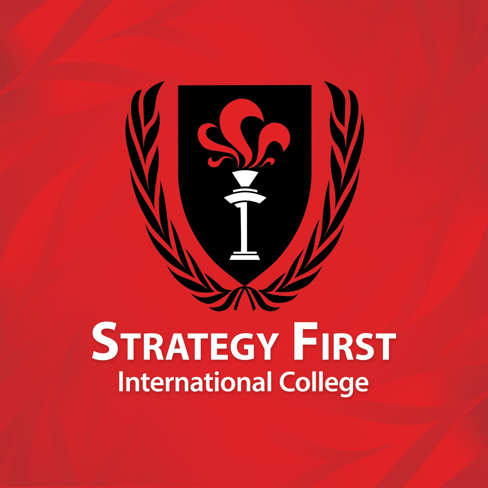
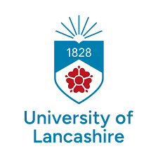
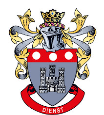
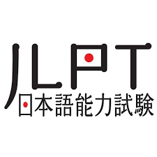

Hi, I'm
Phone Myint Maw
Japanese & English Language Professional, Business IT Graduatefrom


Attended 2 final years of basic highschool level education, 9th and 10th Grade, in prestegious Nyaung Pin Lay Private High School, well known for its high-level teaching method with well reknowned professors.
Visit SchoolFinished the first year of the BSc. Computer Science and Technology course. During the second year's first semester, I parted ways with the University due to COVID-19 and political instabilities.
Visit School
Joined Strategy First International College (Formerly Strategy First University) with their Business Computing and Infromation Systems Undergraduate programme in August 2022 and completed the course in December 2025, through the partnered UK university, University of Lancashire.
Visit School
Joined the BSc (Hons) Business Computing and Infromation Systems thourgh Strategy First International College's UK Degree Pathway programme in February 2025 until December in the same year, successfully completing the course with the First Class Honors.
Visit School
Completed the Institute of Commercial Management's Single Subject Diploma with Grade A (Distinction).

After receiving JLPT N4 and N3, I continued my learning journey and passed the JLPT N2 exam with the total score of 148 out of 180. Additionally, I received full marks in the Listening Test.
Completed the Business Computing and Information Systems course, awarded with First Class Honors Degree by University of Lancashire.
Went to Japan in 2008 and lived there for 1.5 years. After coming back from Japan, I continued to improve my Japanese skills through self-study and practice. Currently, I have a JLPT N2 level certificate with native level Japanese Language fluency.
Learning English ever since I was in a kindergarden and I have finished my UK top up university degree in Business Computing using English as the primary language of instruction.
Throughout my university years and independent studies, I have developed multiple responsive web applications by mastering both the visual and logic layers of software development.
Frontend Development: Focused on creating interactive user interfaces using HTML and CSS (Tailwind / Bootstrap).I am currently expanding my skills into JavaScript and React.js to build modern, component - based UIs.
Backend Development: Proficient in server-side programming with PHP and the Laravel framework, implementing secure authentication and complex business logic for recruitment platforms like "OSHIGOTO JAPAN."
Database Management: Experienced in designing and managing relational databases using MySQL, ensuring efficient data architecture for high-performance applications.
Leveraging native-level fluency in Japanese, I serve as a lead Interview Trainer and Interpreter within a dual-functioning language academy and recruitment firm. My role is pivotal in the end-to-end preparation of candidates for the Japanese labor market, specifically focusing on the Tokutei Ginou (SSW) Visa track.
Strategic Training: I have mentored and coached 200 students, ensuring their successful placement into Japanese companies by refining their professional communication and interview techniques.
Linguistic Liaison: I act as a primary bridge between Japanese employers and local candidates, providing high-stakes interpretation during official interviews and technical screenings.
Operations Management: Beyond language, I contribute to corporate operations by ensuring that all training modules align with the strict requirements of Japanese corporate etiquette and visa regulations.

A Camping Equipment Ecommerce Website project made with HTML and CSS for the project assignemnt of Designing and Develeping Websites Module of NCC's Level 4 Diploma in Computing with Business Management.

A Social Media Awareness Educational Website project made with PHP, CSS, and Bootstrap for the project assignemnt of Dynamic Website Module of NCC's Level 5 Diploma in Computing with Business Management

The Information Systems Project module's project assignment of the final year of NCC's BSc (Hons) Business Computing and Information Systems pathway top up degree awarded by University of Lancashire, UK. Oshigoto Japan is a job application platform for connecting Foreign Japanese-Language-School-Partners and Job Agencies in Japan. This project has been made from initial design to final implementation using HTML, CSS, Tailwind CSS, and Laravel.
Feel free to reach out to me through any of the contacts above! I am open to discussing potential job opportunities, collaborations, or any inquiries you may have. I look forward to connecting with you!